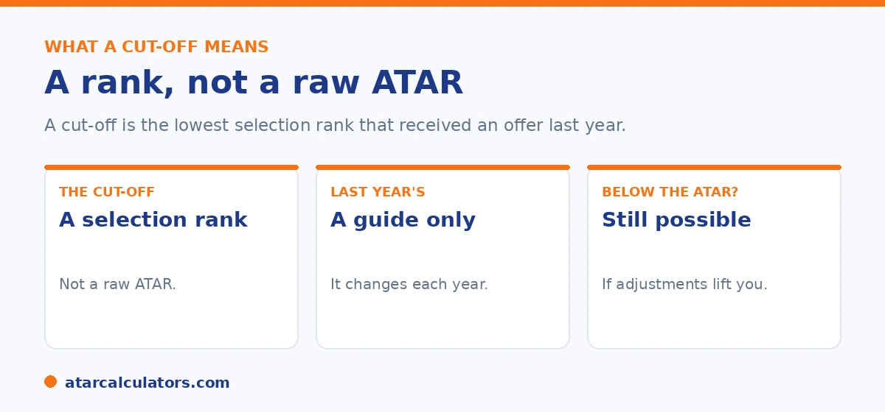

Here is the short version. A published course cut-off is usually a selection rank, not a raw ATAR. It is the lowest selection rank that got an offer in a previous year. Because it depends on demand, it changes from year to year, so last year's is a guide, not a guarantee. And because adjustments lift your selection rank, you can sometimes get an offer with an ATAR below the cut-off.
Course cut-offs cause a lot of worry, often unnecessarily. The number is widely misunderstood, and it is not the fixed ATAR wall many students fear.
Below is what a cut-off really means, and how to read one. To see how your rank compares, use our selection rank calculator.
Key takeaways
- A published cut-off is usually a selection rank, not a raw ATAR.
- It is the lowest selection rank that got an offer last year.
- Cut-offs change each year with demand.
- You can sometimes get in with an ATAR below the cut-off.
- Last year's cut-off is a guide, not a guarantee.
- Always check the course's current requirements.
What a cut-off really is
When a university publishes a cut-off for a course, it is usually the lowest selection rank that got an offer in a previous year. It is not a target the university sets in advance, and it is usually not a raw ATAR.

So a cut-off is really a result, not a rule. It describes what happened last year, based on how many people applied and how they ranked.
It is a selection rank, not an ATAR
This is the key point. Because the cut-off is a selection rank, it already includes other students' adjustments. So you should compare it to your selection rank, not your raw ATAR.
If your ATAR is a little below a cut-off, do not rule the course out. Your adjustments may lift your selection rank to meet it. See our guide on selection rank vs ATAR.
Why cut-offs change each year
Cut-offs are not fixed. They move each year, because they depend on demand. If more students apply for a course, or the cohort is stronger, the cut-off rises. If demand falls, it can drop.
So last year's cut-off is only a guide. Treat it as a rough indicator, not a promise, when you plan your preferences.
Want to see how your rank compares?
Try the selection rank calculator →Getting in with an ATAR below the cut-off
It surprises many students that you can get an offer with an ATAR below the published cut-off. It happens often. If your adjustments lift your selection rank to or above the cut-off, you compete on equal terms with everyone else.
So the published cut-off is a selection rank to aim your selection rank at, not an ATAR to fear. A student with an ATAR below it, plus adjustments, can still get in.
Because this is so widely misunderstood, it is worth spelling out how it works in practice and what to do with it. A published cut-off is the selection rank of the last student admitted last year, and selection ranks already include any adjustment factors that student had. So the figure is not "the minimum ATAR". It is the minimum adjusted rank. That has three practical consequences. First, do not self-reject. If your raw ATAR sits a few points under a course's cut-off, your subject, regional or equity adjustments might carry your selection rank over it. So the course may still be within reach. Second, do not assume safety either. This is because a raw ATAR above the cut-off is not a guarantee. Cut-offs can rise year to year with demand, and other applicants bring their own adjustments. Third, compare like with like. When you weigh yourself against a cut-off, use your selection rank for that specific course, not your bare ATAR. This is because the cut-off already has adjustments baked in. There is also a timing angle. Some adjustments (equity, elite-athlete, certain regional schemes) need a separate application before offers. So claiming everything you are entitled to is part of clearing a cut-off. Read this way, a cut-off is a target for your adjusted rank and a planning tool, not a wall, and students who understand it apply more widely and more accurately.
Guaranteed entry and clearly-in ranks
Some universities also publish a guaranteed entry rank, sometimes called a clearly-in rank. If your selection rank meets it, you are guaranteed an offer, provided you meet any other requirements.
These are useful for planning, because they are more certain than a historical cut-off. As always, check each course's current details, since they can change. See our selection rank guide.
Why your ATAR may not match the published cutoff
Students are often puzzled when their ATAR does not match a published cutoff. The reason is that the cutoff is usually the lowest selection rank that received an offer, not a raw ATAR. So it is compared to your selection rank, which may be higher than your ATAR.
So an ATAR below a published cutoff does not necessarily mean you missed out. If your adjustments lift your selection rank to the cutoff, you can still meet it. The mismatch is between your ATAR and a figure meant for your selection rank.
Reading published cutoffs correctly
To read cutoffs correctly, treat the published figure as a selection-rank cutoff and compare it to your likely selection rank, not your ATAR. Some universities also publish separate guaranteed-entry ranks, which promise an offer at or above a set rank.
So check whether a figure is a prior-year cutoff or a guaranteed-entry rank, and compare it to your selection rank for that course. See selection rank vs ATAR for the distinction.
Planning around cutoffs
Because cutoffs move year to year and are compared to your selection rank, aim to clear them comfortably with your likely rank, rather than exactly. Include a mix of courses: some where your rank clears the cutoff easily, and some more ambitious ones.
So use your estimated selection rank, not your ATAR, when setting preferences against cutoffs. A selection rank calculator helps you see where you stand for each course.
Common questions
Are course cut-offs ATAR or selection rank?
Usually selection rank. A published cut-off is normally the lowest selection rank that got an offer in a previous year, not a raw ATAR. So compare it to your selection rank, not just your ATAR.
Do universities compare cut-offs to my selection rank?
Yes. Universities make offers based on your selection rank, which is your ATAR plus adjustments. The published cut-off is itself a selection rank, so that is the fair comparison.
Can I get into a course with an ATAR below the cut-off?
Often, yes. If your adjustment factors lift your selection rank to or above the cut-off, you can get an offer even with an ATAR below the published number. This happens regularly.
Why do course cut-offs change each year?
Because they depend on demand. The cut-off is the lowest selection rank that got an offer. So it rises when more students apply or the cohort is stronger, and can fall when demand drops.
What is a guaranteed entry rank?
It is a selection rank, sometimes called a clearly-in rank, where an offer is guaranteed if you meet it and any other requirements. It is more certain for planning than a historical cut-off.
Should I rely on last year's cut-off?
Only as a guide. Cut-offs change each year with demand, so last year's number is a rough indicator, not a guarantee. Always check the course's current requirements.
See how your rank compares
Estimate your selection rank and compare it to course requirements. Free, and no signup.
Open the selection rank calculator →Related guides
This guide is general information for students and parents, not formal admissions advice. Adjustment factors, schemes, caps and course cut-offs are set by each university and can change every year. They differ from one institution to another, and from course to course within the same institution. Always confirm the current details with the specific university and your state admissions centre (UAC, VTAC, QTAC, SATAC or TISC). A useful starting point is UAC's guide to selection rank adjustments. Reviewed by the ATARCalculators Editorial Team.